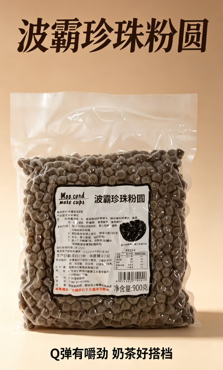
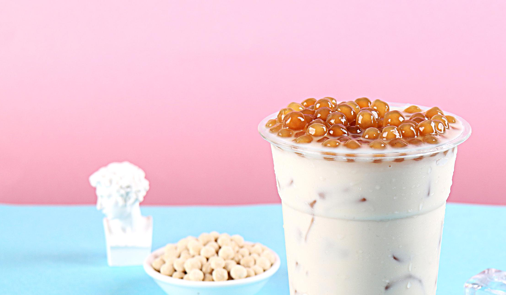
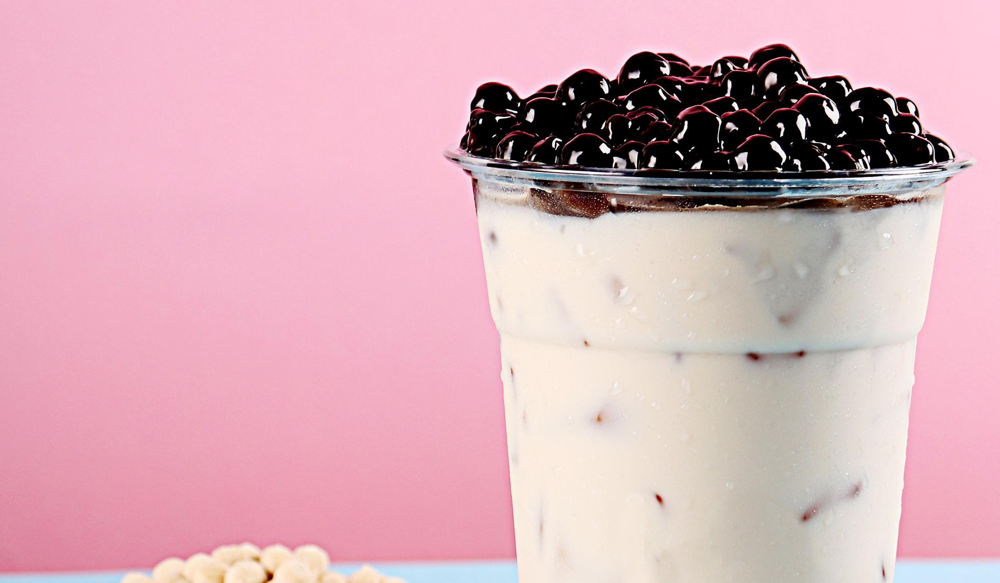
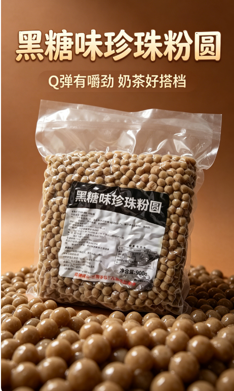
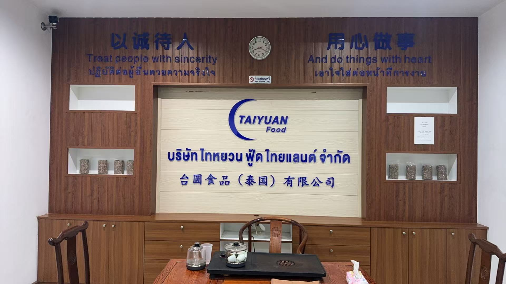
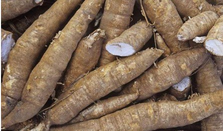
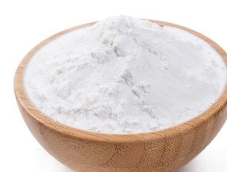
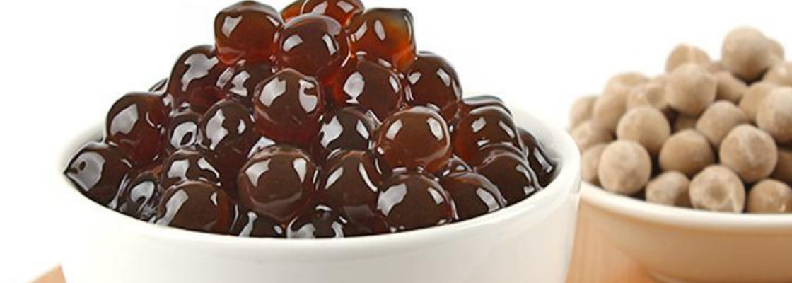
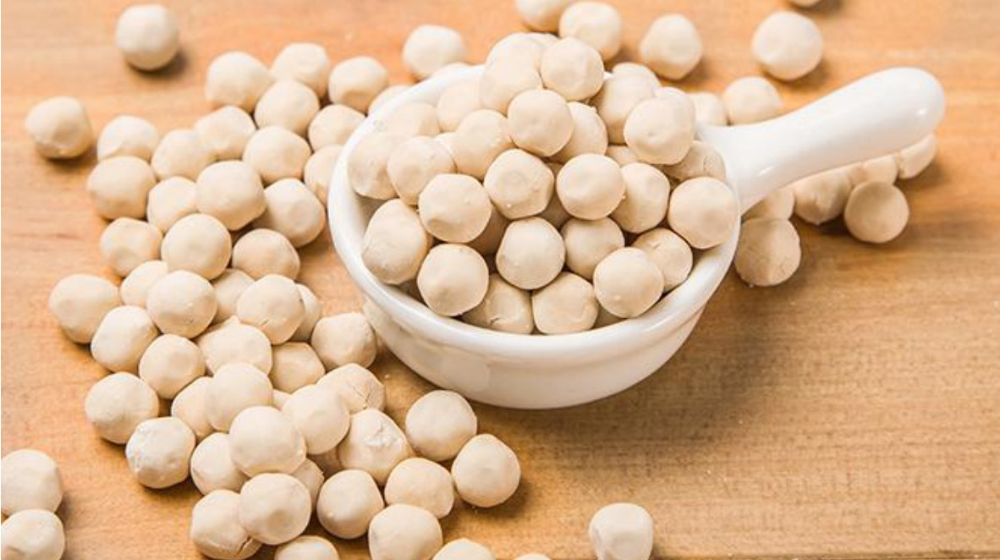

Raw Material
泰国木薯淀粉，决定粉圆的基础口感 Thai cassava starch defines the base texture of pearls
泰国精选木薯，供应成熟稳定Selected Thai cassava with a steady supply
泰国木薯种植与加工体系成熟，形成了较稳定的淀粉供应基础。 Thailand has a mature cassava supply chain, so starch supply stays steady.
- 产地优势：成熟产区，供应更稳定Origin advantage: mature farms and steadier supply
- 原料方向：更贴近食品原料的自然属性Material direction: a more natural food ingredient
- 应用基础：有助于保持外观和口感一致Use base: helps keep look and texture consistent
13%
水分最高
Moisture max
Moisture max
4%
粗纤维最高
Fiber max
Fiber max
2%
泥沙最高
Sand max
Sand max
70%+
淀粉含量基础
Starch base
Starch base


Product Quality
从原料到成品，把粉圆表现说明白 From raw material to finished product, it is easy to see


晶莹剔透 · 色泽鲜亮 / Clear and bright
精选木薯淀粉，多道工序做出稳定口感Selected cassava starch and careful processing for stable texture
经过搅拌、粉碎、成型、整理抛光等工序，兼顾外观、口感和适配性。 Through mixing, forming, and finishing, we keep the look, texture, and use flexible.
- 原料基础：木薯淀粉和配料保持稳定Base: stable starch and ingredients
- 工序说明：流程清晰，便于控品Process: a clear workflow for control
- 口感特点：软糯、弹滑、颗粒饱满Texture: soft, chewy, and full
- 视觉效果：晶莹剔透，展示感更好Look: clear and eye-catching
Soft, glutinous, elastic and slippery.
珍珠粉圆的由来 / Origin
从经典地方配料，逐渐成为大众熟悉的饮品口感元素From a local ingredient to a familiar drink texture
具有台湾特色的“珍珠粉圆”常被视为经典配料之一。随着饮品与甜品文化的发展，它逐渐从地方小吃中的配料元素，延伸为今天消费者熟悉的杯内口感与视觉记忆点。 Tapioca pearls started as a classic Taiwan-style ingredient. As drinks and desserts grew in popularity, they became a familiar texture in the cup.
经过不断改良，粉圆在外观、口感与应用方式上都变得更加成熟，因此珍珠粉圆不仅是一种原料，也是门店产品表达中的重要组成部分。 Over time, pearls became better in look, texture, and use, so they are now part of the product presentation too.
由来要点 / Origin notes
01
02
03
从木薯淀粉到杯中珍珠 From cassava starch to a cup staple
木薯淀粉 Cassava starch
珍珠粉圆的基础原料是木薯淀粉。 Pearl tapioca starts with cassava starch.
台湾台南 Tainan, Taiwan
泡泡茶在台湾台南于 1980 年代走红。 Bubble tea became popular in Tainan in the 1980s.
过筛成珠 Shaped into pearls
湿淀粉经过过筛成珠，煮后会变得晶透有弹性。 Moist starch is sieved into pearls, then cooked until translucent and chewy.
Why it matters
这些特点让珍珠粉圆从原料变成了饮品里的口感记忆点。That is why pearls became a memorable part of drinks.
联系与样品 / Contact
获取样品、报价与合作建议 Ask for samples, pricing, or partnership help
支持寄样、资料发送和合作沟通，确认需求后再推进报价，更高效。 We can send samples, share documents, and talk through your needs before quoting.
免费寄样 / Free samples
资料发送 / Documents
交期沟通 / Lead time